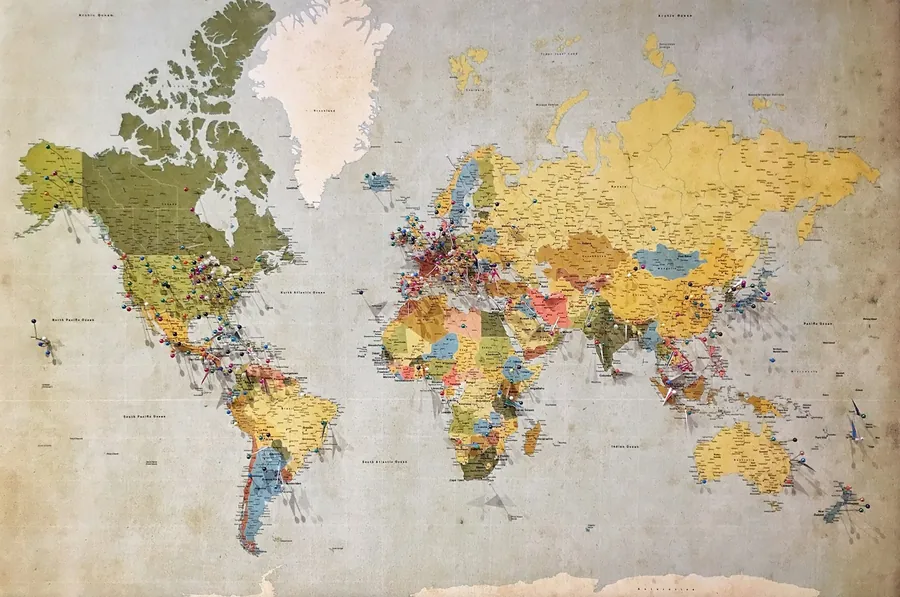
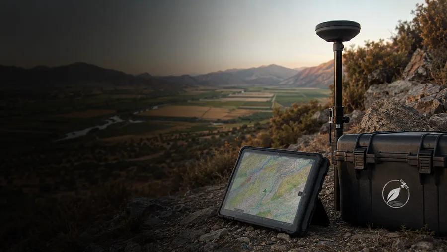
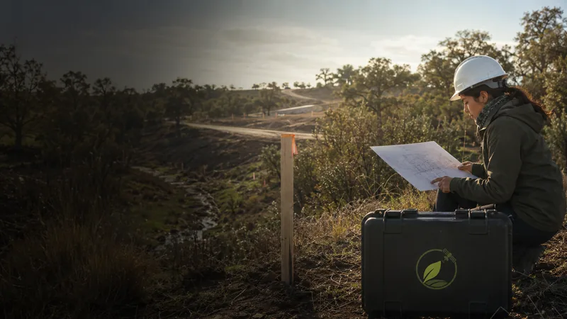
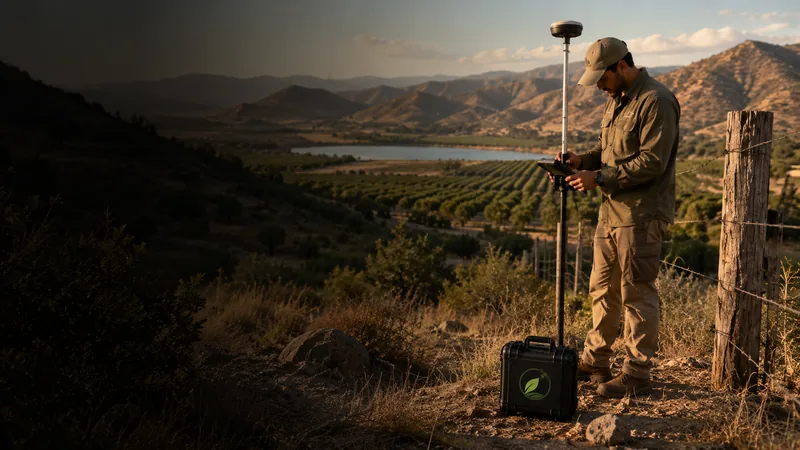
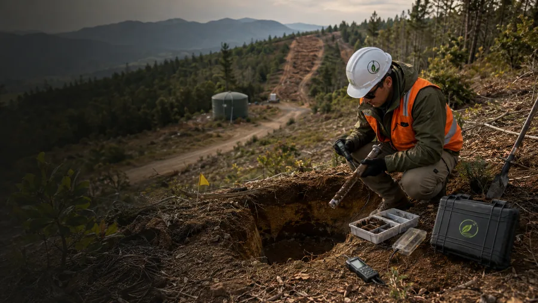

Cómo responder observaciones de la autoridad sin retrasar tu proyecto
Claves para preparar respuestas técnicas sólidas y defendibles ante requerimientos sectoriales.
Claves para preparar respuestas técnicas sólidas y defendibles ante requerimientos sectoriales.

Cómo los sistemas de información geográfica aceleran decisiones precisas sobre el terreno.
Buenas prácticas para asegurar sobrevivencia y cumplimiento en proyectos de restauración.
Un inventario del arbolado urbano es la base para gestionar, planificar y priorizar la inversión en áreas verdes.
Guía para entender cuándo se exige un plan de manejo y qué elementos técnicos no pueden faltar.
Cómo evaluar el riesgo de incendio de un predio y qué medidas de prevención priorizar.
Conoce qué distingue a una DIA de un EIA y qué antecedentes conviene revisar antes de definir la estrategia ambiental de un proyecto.

Una guía práctica para revisar hidrología, vegetación, suelos y límite urbano antes de diseñar o evaluar un proyecto cercano a un humedal.

Qué capas espaciales revisar antes de avanzar con el diseño, la compra o la evaluación ambiental de un proyecto inmobiliario.

Checklist técnico para ordenar cartografía, vegetación, obras y medidas de manejo cuando un proyecto interviene un predio rural.

Cómo pasar de un diagnóstico general de peligro a un plan predial que priorice combustible, accesos, pendientes y zonas de interfaz.